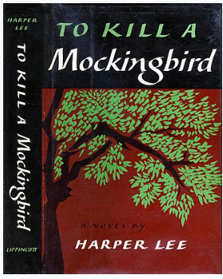
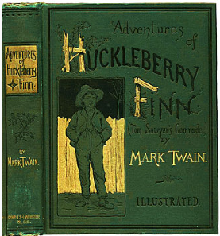
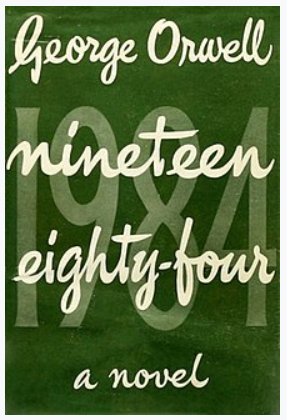
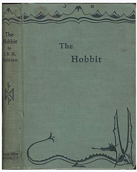

The Lord of the Rings is an epic[1] high-fantasy novel[a] by the English author and scholar J. R. R. Tolkien. Set in Middle-earth, the story began as a sequel to Tolkien's 1937 children's book The Hobbit, but eventually developed into a much larger work. Written in stages between 1937 and 1949, The Lord of the Rings is one of the best-selling books ever written, with over 150 million copies sold.[2]
The Great Gatsby
Author: F. Scott Fitzgerald
The novel was inspired by a youthful romance Fitzgerald had "Huck" Finn, the narrator of two other Twain novels (Tom Sawyer Abroad and Tom Sawyer, Detective) and a friend of Tom Sawyer.with socialite Ginevra King, and the riotous parties he attended on Long Island's North Shore in 1922. Following a move to the French Riviera, Fitzgerald completed a rough draft of the novel in 1924.

To Kill a Mockingbird
Author:Harper Lee
To Kill a Mockingbird is a novel by the American author Harper Lee. It was published in 1960 and was instantly successful. In the United States, it is widely read in high schools and middle schools. To Kill a Mockingbird has become a classic of modern American literature; a year after its release, it won the Pulitzer Prize. The plot and characters are loosely based on Lee's observations of her family,

Adventures of Huckleberry Finn
Author:Mark Twain
Adventures of Huckleberry Finn is a novel by American author Mark Twain, which was first published in the United Kingdom in December 1884 and in the United States in February 1885. Commonly named among the Great American Novels, the work is among the first in major American to be written throughout in vernacular English, characterized by local color regionalism. It is told in the as

Nineteen Eighty-Four
Author:George Orwell
Nineteen Eighty-Four (also published as 1984) is a dystopian social science fiction novel and cautionary tale by English writer George Orwell. It was published on 8 June 1949 by Secker & Warburg as Orwell's ninth and final book completed in his lifetime. Thematically, it centres on the consequences of totalitarianism, mass surveillance and repressive regimentation of people and behaviours within society.

The Hobbit
Author:John Ronald Reuel Tolkien
The Hobbit, or There and Back Again is a children's fantasy novel by English author J. R. R. Tolkien. It was published in 1937 to wide critical acclaim, being nominated for the Carnegie Medal and awarded a prize from the New York Herald Tribune for best juvenile fiction. The book is recognized as a classic in children's literature, and is one of the best-seling books of all time with over 100 copies sold.